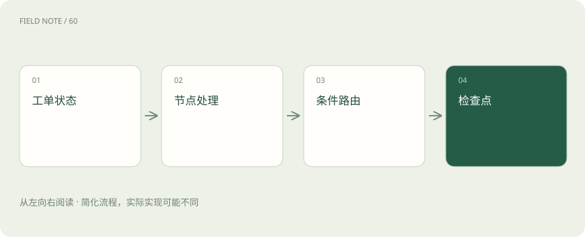
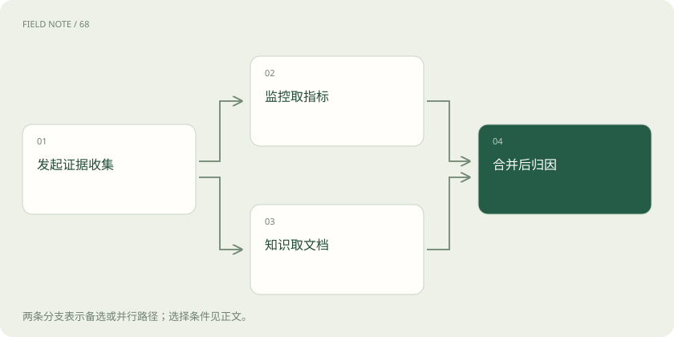
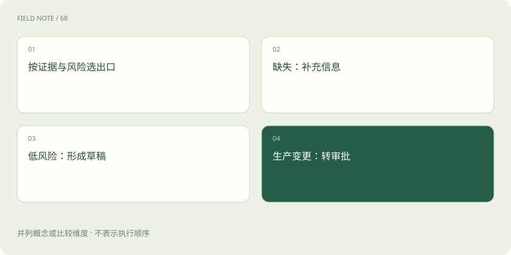

先读哪些知识
先用一个类比理解
类比只帮助建立直觉，不等同于技术的完整机制。
一图看懂

状态不是聊天全文
一张工单至少需要问题描述、证据集合、风险级别、建议和审批结果。消息历史只是其中一个字段。把全部东西塞进长对话，会让路由依赖模型从自然语言猜测当前进度，也难以定位哪个步骤修改了结论。
状态字段还应区分事实和推断。指标时间戳是事实，疑似缓存配置异常是推断。若二者都叫“上下文”，后续节点可能把未经验证的猜测当成证据，形成看似自洽的错误闭环。
业务状态还要包含证据对应的采样时间。十分钟前的监控结果与刚发布的变更记录不能无条件合并为同一时刻的事实。归因节点应先检查时间窗口是否重叠，再判断它们是否支持同一结论；图提供存放字段的位置，时间一致性规则仍由团队定义。
节点提交状态更新
监控节点读取设备编号并提交指标证据，知识节点读取故障关键词并提交文档证据。节点通常返回局部更新，图运行时将其合并到状态；设计时要明确哪些字段由谁负责，避免两个节点悄悄覆盖同一份结论。
节点边界应与可测试的输入输出对应。监控节点不顺便给工单结案，归因节点不悄悄修改生产配置。这样在回放轨迹时，可以明确是哪一个环节获得了什么权限并作出哪项更新。
边表达控制
普通边表示执行完转到哪里，条件边根据状态选择下一步。例如证据不足返回补充信息，风险较低进入建议草稿，涉及生产变更则走审批。路由结果应是可枚举的选择，不能让任意模型文本成为节点名称。
遇到缺失字段时，优先进入明确的补充信息分支，而不是默认走成功路径。缺少设备编号与“设备不存在”也要分开：前者是输入问题，后者可能意味着台账同步或权限范围问题。
图解：并行证据的汇合

Reducer 决定合并
两个并行节点都写证据列表时，直接覆盖会丢掉一个结果。Reducer 可以定义追加或按证据标识去重。追加不是总正确：重复重试可能产生重复证据，顺序也未必代表时间先后，因此合并规则属于业务语义。
对消息可使用与消息身份匹配的合并方式，对业务实体则按业务主键更新。不要把一个通用列表追加函数套给所有字段；已撤销建议和新建议并存时，界面必须知道哪个仍有效。
一次完整行走
工单说缓存命中率下降。入口先核验服务标识，监控节点发现延迟上升，知识节点找到缓存配置说明，归因节点发现证据不足以证明内存故障，转向变更查询。查到刚调整过淘汰策略后，才形成待审回滚建议。
这一过程允许知识查询与指标查询并行，因为两者没有相互依赖；归因却应等待证据汇合。并行不是越多越好，如果查询变更必须先知道服务环境，提前启动只会检索到错误对象。
检查点与线程
检查点记录执行过程中的状态快照，线程标识把一次持续任务的检查点关联起来。它不是企业知识库，也不是数据库事务日志。应按工单或业务会话设计线程边界，避免不同客户的状态混在同一执行链里。
持久化之后仍应设置保留期限与访问控制。工单中可能含账号、客户信息或日志片段；从内存搬到数据库不会降低敏感程度。调试界面也需要按用户权限限制可查看的线程。
图也会过度设计
若流程只有校验、查询和格式化三个固定步骤，普通函数就足够。图适合需要分支、恢复、并发和人工介入的执行过程。节点过细会让调试被大量无意义的转换淹没；以有独立失败语义的工作单元划分更合理。
例如发送一条提醒可以是一个节点，但把字符串拼接、日期格式化都拆成节点通常没有收益。更实用的判断是：这里失败以后，是否需要独立重试、人工介入或查看中间证据。
图解：工单的条件路由

用状态验证行为
验收时不只读最终建议，还应检查每次状态变化：证据是否保存来源，风险级别是否有依据，拒绝审批后是否仍可能进入执行节点。状态图的价值是把这些问题变成可定位的转换，而不是把流程画得漂亮。
还可以让同一份已保存状态分别走不同策略，比较是否改变建议。此时要隔离真实写入工具，否则所谓回放会再次修改外部系统。图的可解释性必须建立在受控执行边界上。
放在一起对比
| 概念 | 工单中的对应物 | 必须明确的规则 |
|---|---|---|
| State | 证据、风险与审批字段 | 区分事实和推断 |
| Node | 监控查询或归因步骤 | 输入输出与副作用边界 |
| Edge | 补信息、草稿或审批路线 | 缺失信息走哪个分支 |
| Reducer | 合并并行证据 | 追加、覆盖或按身份去重 |
| Checkpoint | 任务进度快照 | 线程身份与保留期限 |
放进真实场景
监控节点读取设备编号并提交指标证据，知识节点读取故障关键词并提交文档证据。节点通常返回局部更新，图运行时将其合并到状态；设计时要明确哪些字段由谁负责，避免两个节点悄悄覆盖同一份结论。
别踩这个误区
想一想
并行节点都写证据列表时，为什么只声明状态类型还不够？
类型说明数据是什么，Reducer 才定义多个更新如何合并。必须决定追加、去重或覆盖，并处理重试产生的重复证据。
关联阅读
资料与边界
本文为原创知识讲解。类比和图示经过简化；示例数字不代表实测或报价。整理日期：2026-11-04。文末列出对应技术的原始资料，具体功能与版本支持请以原文为准。